Backend · Frontend · Arquitetura de Software
Alfenas, MG · 1º Semestre — Ciência da Computação
Desenvolvedor com ~1 ano de experiência, formado em um intensivo de 580h com simulação profissional real — Scrum, sprints, revisão de código e projetos em equipe. Atualmente no primeiro semestre de Ciência da Computação, com ritmo e mentalidade que já vão muito além do esperado.
Trabalho como monitor de programação, acumulando responsabilidades de desenvolvimento e revisão de PRs sob supervisão sênior. Chego nos problemas com o diagnóstico já formado — uso IA pra acelerar implementação, não como substituto de raciocínio.
Meu projeto principal é o Learnly, uma plataforma de preparação para o ENEM. Recentemente recebi oferta para apresentar em escolas — passando de projeto de portfólio para produto real.

Construí do zero — banco de questões, feedback por IA, histórico de erros persistente e chatbot contextualizado. Arquitetura em .NET com Clean Architecture e React. Recentemente recebi oferta para apresentar em escolas, transformando o projeto de portfólio em produto real com considerações reais de escalabilidade.
Formado na Itera360 — curso Full Stack de 580h com ambiente que simula o mercado real: Scrum, sprints, projetos em equipe e revisão de código com feedback sênior.
Primeiro semestre de Ciência da Computação, ~1 ano de experiência prática. O nível reflete o que a formação entregou, não tempo de mercado.